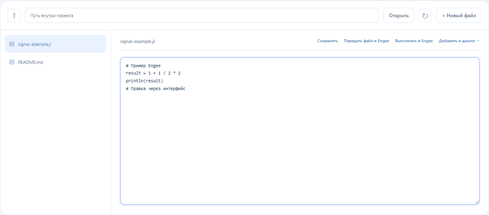
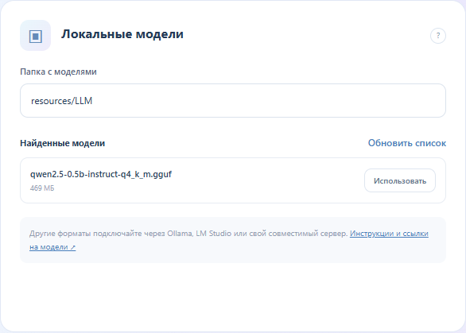
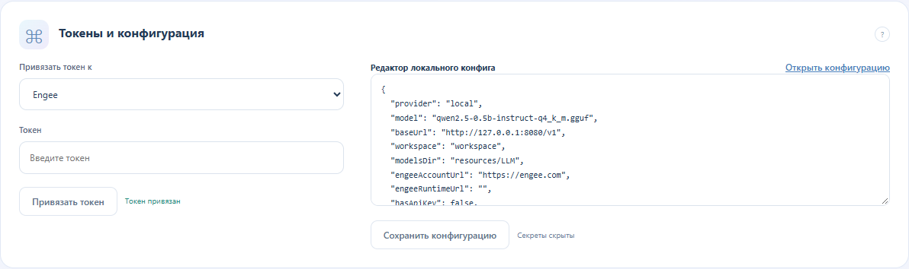

Engee Agent
Инструкция по запуску, настройке и работе
От распаковки архива до работы с проектом: локальные и облачные модели, доступ к Engee, файлы, навыки и перенос на другой ПК.
Первый запуск
Распакуйте приложение версии 1.2.0, запустите сервер и выберите способ работы. Пакет предназначен для Windows 10/11 x64; для встроенного терминала нужна Windows 10 версии 1809 или новее.
- Распакуйте весь ZIP в обычную папку с правом записи, например C:\EngeeAgent. Не запускайте приложение прямо из архива.
- Дважды нажмите EngeeAgent.exe. Откроется браузер. Обычный адрес - http://127.0.0.1:3081/. Если порт занят, запускатель использует свободный порт 3082-3090 и откроет нужный адрес.
- Откройте «Параметры → Файлы проекта → Рабочая папка» и выберите рабочую папку Engee. Для чистого старта можно оставить workspace внутри приложения.
- Встроенная локальная модель доступна без регистрации. Выберите модель в «Диалоге» или используйте сохранённое подключение. Для другого API, локального сервера или программы откройте «Параметры → Нейросети и подключения → Ваши подключения → + Добавить подключение».
- Для вычислений откройте ⚙ рядом с i у отправки. В меню «Код в чате» по умолчанию выбрана Engee; локальная Julia доступна после отдельной установки. Введите /eval 1+1 и проверьте код и среду в подтверждении. Для бесплатной онлайн-модели используйте официальный вход OpenRouter в «Параметры → Нейросети и подключения → Ваши подключения».
- Для завершения работы нажмите кнопку питания ⏻ в правом верхнем углу (подсказка «Остановить приложение»). Сначала появится «Сохранение…»: приложение сохраняет локальные данные и только после успеха выключает сервер. При ошибке выберите «Повторить» или «Отмена». Закрытие вкладки браузера само по себе не останавливает сервер.
Интернет нужен для Engee и облачных моделей. Встроенный локальный чат работает без интернета. Локальная нейросеть и среда Engee - разные компоненты: модель может готовить код на этом ПК, а запуск кода в Engee требует подключения к вашей среде.
Ориентироваться в интерфейсе
Верхняя навигация содержит «Диалог», «Терминал» и «Параметры». Общая шапка остаётся доступной во всех разделах. Внизу «Диалога», в строке у поля сообщения рядом со скрепкой и папкой, расположена компактная кнопка с именем текущей модели. Она открывает выбор сервиса и модели.
| Раздел | Для чего нужен |
|---|---|
| Диалог | Задачи для модели, выбор провайдера, вложения, команды и сессии Claude Code. |
| Терминал | Настоящая PowerShell/Git Bash или необязательный Julia REPL в выбранной папке проекта: ручной ввод, вывод и управление своей сессией. |
| Параметры | Подключения, Engee, рабочая папка, навыки и компоненты. Файловый браузер открывается отдельным окном из диалога. |
В «Параметрах» четыре вертикальные категории: «Нейросети и подключения», «Engee», «Файлы проекта» и «Компоненты». Нажмите заголовок, чтобы раскрыть или свернуть категорию. Внутри нейросетей находятся «Текущее подключение», «Ваши подключения», «Локальные модели» и «Другие сервисы»; внутри Engee — «Аккаунт», «Среда выполнения» и «Токены и конфигурация»; внутри файлов проекта — «Рабочая папка» и «Навыки». Категории и подразделы сначала свёрнуты; отдельной навигации вкладками внутри параметров нет.
Значок папки рядом со скрепкой в «Диалоге» открывает окно файлов проекта. В нём можно просматривать файлы, редактировать, создавать, сохранять, запускать их в Engee и добавлять содержимое в диалог. /files открывает это же окно. Рабочая папка и навыки настраиваются в «Параметры → Файлы проекта».
Работа с проектом включена постоянно. Помощник получает доступ к инструментам проекта, но не читает автоматически все файлы. Для понятной задачи выбирайте нужные файлы, описывайте результат и проверяйте предложенные действия.
Значок ? в общей шапке открывает эту единую инструкцию. Кнопка питания ⏻ сначала сохраняет локальные данные, затем завершает приложение. Ссылки «Инструкция» у компонентов ведут к нужному месту на этой же странице.
⚙ рядом с i и кнопкой «Отправить» выбирает, где выполняется код в чате: Engee или локальная Julia. Это отдельный выбор от провайдера нейросети. По умолчанию используется Engee; подсказка шестерёнки показывает текущую среду. Само переключение код не запускает.
Сохранить данные и завершить работу
Нажмите ⏻. В окне «Сохранение…» дождитесь записи изменённого файла проекта, готовых к сохранению параметров, локальной истории и восстанавливаемых черновиков. Незавершённый мастер подключения, новый файл или навык сохраняются как черновики: приложение не создаёт из неполных данных готовое подключение, файл или навык.
Выбрать и переключить модель
Внизу «Диалога» нажмите кнопку с именем текущей модели рядом со скрепкой и папкой. В открывшемся окне выберите сервис, затем его модель. Для обновления подключений и каталога используйте общий ↻ в шапке с подсказкой «Обновить все подключения».
- Нажмите кнопку с текущим именем модели у поля сообщения. В открывшемся выборе доступны группы «Локальные модели», «Claude» и «Бесплатный API». Для отдельного API, своего сервера или программы сначала создайте подключение в «Параметры → Нейросети и подключения → Ваши подключения».
- Нажмите общий ↻ в шапке или введите /models, чтобы получить актуальные модели выбранного источника. У Ollama выберите установленную модель из выпадающего списка; у API используйте реальный идентификатор из каталога.
- Если у сервиса нет каталога, введите точный идентификатор из его документации в мастере подключения. Сохранённый профиль меняйте через «Изменить»; после проверки нажмите «Использовать».
- Для встроенной GGUF выберите найденный файл из настроенной папки LLM. При первом сообщении запускается локальный движок. Для Claude Code используется установленный и авторизованный агент; копирование GGUF не настраивает Claude.
- Проверьте источник и модель у полученного ответа. Для точного вычисления используйте /eval и явно выберите нужную среду выполнения кода; итоговую проверку проекта Engee выполняйте в Engee.
Добавить и использовать подключение
Откройте «Параметры → Нейросети и подключения → Ваши подключения», нажмите «+ Добавить подключение» и выберите «API сервиса», «Локальная модель» или «Программа».
Выбор, открываемый кнопкой модели у поля сообщения, разделён на три группы: «Локальные модели» — Ollama, встроенный GGUF и LM Studio; «Claude» — установленный и авторизованный Claude Code; «Бесплатный API» — OpenRouter. Другие сервисы добавляйте через мастер. Сохранённые подключения доступны с действиями «Использовать», «Изменить», «Проверить» и «Удалить».
Подраздел «Текущее подключение» показывает активный провайдер, модель и параметры API; здесь же доступен каталог Ollama. Сохранённые записи, мастер и подключение бесплатного OpenRouter находятся в «Ваши подключения». Для изменения записи нажмите «Изменить» и используйте мастер. Общая кнопка сохранения параметров сохраняет выбор активного подключения; она не заменяет редактирование профиля.
- Для API выберите сервис или универсальное подключение. Укажите предоставленный сервисом адрес, формат API и собственный ключ, если он требуется. Нажмите поиск моделей и выберите реальный идентификатор из каталога; при отсутствии каталога введите точное имя из документации сервиса.
- Для локальной модели выберите её источник. GGUF запускается встроенным движком из папки LLM; Ollama и LM Studio используют модели, загруженные в соответствующее приложение, и адрес его сервера. Найдите модели и проверьте выбранную модель.
- Для программы укажите установленный инструмент и его параметры. «Открыть в терминале» запускается только вашим нажатием; автоматического входа или запуска программы при выборе записи нет. Для Claude Code и OpenCode выполните собственный вход через терминал.
- Сохраните подключение, нажмите «Проверить», затем «Использовать». Изменение или удаление записи относится к настройкам Engee Agent; установленная программа и файлы модели остаются на этом компьютере.
Какой формат API выбрать
| Формат | Когда использовать |
|---|---|
| Chat Completions | OpenAI-совместимый API: базовый адрес обычно заканчивается на /v1; приложение использует /chat/completions. |
| Responses | Сервис с API /responses. Например, профиль OpenAI использует API-ключ и модель, доступную этому ключу; вход в ChatGPT или установленный Codex сам по себе не настраивает этот профиль. |
| Anthropic | Нативный Messages API: базовый адрес https://api.anthropic.com/v1, запрос /messages. При необходимости задайте заголовок рабочего пространства, указанный в кабинете Anthropic. |
| Gemini | Нативный generateContent API: базовый адрес https://generativelanguage.googleapis.com/v1beta, точное имя модели из каталога. Ключ отправляется в заголовке x-goog-api-key. |
| Свой JSON | Укажите полный URL запроса, JSON-шаблон и путь текста в ответе. Приложение отправляет POST ровно по этому адресу, без добавления /chat/completions. Имя модели необязательно, если её выбирает сам сервис. |
В своём JSON доступны переменные {{messages}}, {{tools}}, {{model}}, {{prompt}} и {{apiKey}}. Если переменная занимает целое строковое значение, массивы и объекты сохраняют структуру. Внутри текста они подставляются как текст JSON. Путь ответа поддерживает поля через точку и числовые индексы, например result.answers[0].text. Если сервис возвращает инструменты в своей схеме, укажите путь массива вызовов и пути имени, аргументов и идентификатора. Скрипты и JavaScript в шаблонах не выполняются.
Используйте HTTPS для удалённого API или HTTP локального компьютера. Ключ задавайте отдельным полем или шаблоном заголовка {{apiKey}}, а не в URL и не в сообщении. Сохранённый ключ отмечен «Сохранён» и не загружается в браузер; «Заменить» позволяет ввести новый. «Показать/Скрыть» относится только к вручную введённому значению.
После запуска или выбора GGUF диалог автоматически переключается на эту локальную модель. Для Ollama обновляйте список установленных моделей и выбирайте идентификатор сервера; имя GGUF не заменяет имя модели Ollama. Сохранение существующей записи Ollama не требует повторного скачивания модели.
У сообщения видно время HH:mm, источник ответа и модель либо среду выполнения — Engee или локальную Julia. Подпись «Ответ за … с» показывает фактическую длительность полученного ответа. Ответ нейросети и результат исполнения кода различаются по источнику: расчёты проверяйте через /eval, а проект Engee — выполнением в Engee.
Подключить бесплатный онлайн API
OpenRouter предоставляет бесплатные модели через API. Для подключения нужен ваш аккаунт OpenRouter; приложение получает отдельный ключ после входа в официальном окне браузера.
- Откройте «Параметры → Нейросети и подключения → Ваши подключения». В карточке «Бесплатный API · OpenRouter» нажмите «Подключить бесплатный API», затем «Войти в OpenRouter ↗».
- В официальном окне OpenRouter войдите в свой аккаунт и разрешите отдельный ключ для Engee Agent. Вручную копировать его не требуется: после возврата в приложение ключ сохраняется локально.
- Дождитесь проверки: приложение отправляет только публичный пример 1+1 в openrouter/free, без файлов проекта. Успешный ответ 2 подтверждает работу текущего доступа и выбранной бесплатной модели; результат и сообщённая стоимость показываются в карточке.
- Если ключ уже сохранён, нажмите «Проверить бесплатный API», чтобы повторить проверку без нового входа. Ввести свой ключ вручную также можно в настройках подключения.
- Для прекращения ожидания нажмите «Отменить» либо Stop. Если показана ошибка, отмена или истёкшее ожидание, исправьте причину и начните подключение заново. Ожидание входа ограничено 10 минутами, проверка ответа — 120 секундами.
- После успешной проверки используйте OpenRouter из группы «Бесплатный API» в «Диалоге». Перед отправкой своих файлов при необходимости проверьте подготовленный контекст значком i.
Если сервис сообщил стоимость 0, карточка показывает нулевую стоимость проверочного запроса. Если поле стоимости отсутствует, приложение честно сообщает, что сервис её не указал: отсутствие значения не считается доказательством нулевого списания. Стоимость выбранного бесплатного маршрута описана OpenRouter; ограничение или ошибка аккаунта могут помешать запросу даже при выборе бесплатной модели.
Ключ OpenRouter нужен для онлайн нейросети и отличается от токена доступа Engee. Не вставляйте ключ в диалог, навык или файл проекта. Сохранённый ключ не показывается в браузере и не включается в публичный ZIP. Вход через OpenRouter не переносит сюда учётные данные Engee.
Выбрать проект и файлы
Рабочая папка определяет, с какими локальными файлами Engee может работать помощник.
Настроить рабочую папку
- Откройте «Параметры → Файлы проекта → Рабочая папка». Укажите полный путь к своей папке Engee и нажмите «Подключить папку».
- Проверьте подпись рабочей папки. Она должна указывать именно на нужный проект. Навыки находятся рядом в раскрываемом подразделе «Навыки».
Открыть файлы из диалога
- В «Диалоге» нажмите значок папки рядом со скрепкой (подсказка «Открыть файлы проекта») либо отправьте /files. Откроется окно «Файлы проекта» для выбранной рабочей папки.
- Откройте папку или файл в списке. Кнопка «На уровень выше» возвращает к родительской папке внутри проекта.
- Добавьте нужные файлы в диалог. Перед отправкой проверьте названия и содержимое в поле сообщения, а также список вложений; удалите лишние данные.
- Сформулируйте задачу: например «Прочитай выбранный .ngscript, объясни его работу и предложи исправление. Перед записью покажи точное содержимое».
Крестик «Закрыть файлы проекта» закрывает окно, оставляя редактор и черновик доступными при следующем открытии. Это закрытие окна само по себе не записывает файл. «Добавить в диалог» закрывает окно и возвращает курсор в поле сообщения; проверьте добавленный текст перед отправкой.
Выбор рабочей папки не переносит её файлы в ZIP. Внешнюю папку на другом ПК нужно скопировать отдельно и указать заново. Не выбирайте папку всего компьютера: задавайте конкретную папку проекта Engee.
В окне передачи нажмите «Посмотреть папку в Engee», чтобы получить список файлов в /user без изменения их содержимого. Модель .engee открывайте и редактируйте средствами самой Engee. Передача в Engee и вложение к сообщению модели - разные действия: .engee не поддерживается как вложение чата.
Создать, изменить, сохранить и запустить файл
Весь обычный сценарий выполняется в интерфейсе: выберите проект, откройте редактор, сохраните текст и запустите его в Engee.
- Подключите рабочую папку в «Параметры → Файлы проекта → Рабочая папка». В «Диалоге» откройте значок папки рядом со скрепкой. Выберите текстовый файл и нажмите «Редактировать» либо нажмите «+ Новый файл» и укажите путь внутри проекта.
- В редакторе либо в поле «Содержимое» нового файла измените код. Для первой проверки выберите имя example.jl и введите println(1 + 1/2*2).
- Для нового файла нажмите «Сохранить в проект», для редактируемого - «Сохранить». В подтверждении проверьте путь и точное содержимое; только после разрешения выполняется запись.
- Подключите Engee в «Параметры → Engee» и дождитесь готовности среды. Вернитесь к сохранённому .jl или .ngscript и нажмите «Выполнить в Engee».
- Проверьте код в подтверждении запуска. После разрешения дождитесь реального результата Engee. Для приведённого выражения ожидается 2.0.
- Если модель прислала блок кода в диалоге, нажмите рядом с ним «Сохранить в проект», выберите имя файла и подтвердите запись. Затем откройте файл и нажмите «Выполнить в Engee». Оценивайте реальный вывод.

println(1 + 1/2*2) # Ожидаемый результат в Engee: # 2.0
При редактировании нативного .ngscript поле source каждой ячейки кода должно содержать одну многострочную строку. Такой файл выполняется средствами Engee как блокнот. Бинарные модели редактируйте в самой Engee, а не в текстовом редакторе.
При выходе через ⏻ изменения файла сохраняются автоматически до остановки приложения. Не закрывайте окно «Сохранение…» и дождитесь успешного завершения. Незавершённый новый файл остаётся восстанавливаемым черновиком, если данных для его создания ещё недостаточно.
Запустить GGUF из папки LLM
Для встроенного режима модель загружается переносимым llama.cpp. Установка Ollama для этого способа не нужна.
- Откройте «Параметры → Нейросети и подключения → Локальные модели». По умолчанию используется resources/LLM.
- Чтобы добавить модель, скопируйте поддерживаемый файл .gguf в эту папку. Либо вручную укажите свою папку на другом диске и обновите список.
- У нужной модели нажмите «Запустить». Если она уже работает, кнопка называется «Использовать». Приложение запускает или выбирает модель и автоматически переключает диалог на встроенный локальный провайдер.
- Дождитесь сообщения, что модель готова. Вернитесь в «Диалог» и отправьте простую задачу.
- Если модель не помещается в память, выберите меньшую модель или более компактное квантование. Для разделённого GGUF положите все части рядом.
Если выбранная GGUF ещё не запущена, локальный движок запустится при первом сообщении. Состояние нейросети — ожидание запуска, запуск или готовность — можно посмотреть в подсказке её точки в общей шапке. Выбор сохранённой GGUF автоматически синхронизирует провайдера и модель диалога.

Встроенная модель и проверка файлов
В комплект входит официальный GGUF Qwen2.5-0.5B-Instruct Q4_K_M: qwen2.5-0.5b-instruct-q4_k_m.gguf, 491 400 032 байта. Лицензия Apache 2.0 сохранена в resources/LLM/QWEN-LICENSE.txt, карточка издателя — в QWEN-MODEL-CARD.md, контрольная сумма SHA256 — в SHA256SUMS.txt. Эти файлы относятся к модели и должны оставаться рядом с ней при переносе.
Модель 0.5B подходит для проверки соединения и простого чата. В проверке выражения 1+1/2*2 она ответила 3.0 вместо 2.0. Код и расчёты проверяйте в Engee; для сложных задач выберите более крупную локальную модель или доступную облачную модель.
Где скачать локальные модели
Для встроенной папки выбирайте GGUF с архитектурой, поддерживаемой входящей версией llama.cpp. Проверяйте издателя, лицензию, размер и требования к памяти. Для разделённого GGUF положите все части рядом. safetensors, pytorch_model.bin, веса Ollama и папки Transformers требуют конвертации в поддерживаемый GGUF или отдельного совместимого сервера; простое копирование в resources/LLM их не запускает.
Подключить Ollama, LM Studio или удалённый сервер
Установленные модели отдельного сервера обнаруживаются через его API. Имя файла GGUF и имя модели Ollama не взаимозаменяемы.
- Для Ollama установите приложение и загрузите модель в самом Ollama. Его стандартный адрес API: http://127.0.0.1:11434/v1.
- В Engee Agent выберите Ollama и нажмите общий ↻ «Обновить все подключения» в шапке. Выберите установленную модель из списка; не вводите имя GGUF из встроенной папки. В «Параметры → Нейросети и подключения → Текущее подключение» также доступен каталог сервера.
- Для LM Studio загрузите и подготовьте модель, включите локальный сервер. Выберите LM Studio в «Диалоге» либо добавьте локальное подключение через мастер. Стандартный адрес — http://127.0.0.1:1234/v1.
- Для удалённого сервера откройте «Параметры → Нейросети и подключения → Ваши подключения → + Добавить подключение → API сервиса», укажите HTTPS-адрес, соответствующий формат API, реальную модель и собственный ключ, если он требуется.
- Сохраните настройки, найдите модели и проверьте соединение. Если сервер не предоставляет список моделей, введите точный идентификатор из его документации.
LM Studio: модель и локальный сервер
Скачайте LM Studio для Windows, загрузите в нём модель и включите локальный сервер. В Engee Agent выберите LM Studio либо добавьте локальное подключение через мастер с адресом http://127.0.0.1:1234/v1. Обновите модели и выберите идентификатор, который возвращает этот сервер. Установка приложения сама по себе не загружает модель и не включает сервер.
Подключить бесплатное облако
Бесплатный тариф означает ограниченную квоту провайдера. Доступность зависит от его правил, региона и вашего аккаунта.
- Для бесплатного API откройте «Параметры → Нейросети и подключения → Ваши подключения → Подключить бесплатный API → Войти в OpenRouter». Разрешите отдельный ключ на официальном сайте и дождитесь проверки. Если у вас уже есть свой ключ, можно ввести его вручную.
- Выберите openrouter/free или фактически доступную модель :free. В этом профиле платные модели не используются; проверьте текущую бесплатную квоту своего аккаунта.
- Другие сервисы подключаются через «Параметры → Нейросети и подключения → Ваши подключения → + Добавить подключение → API сервиса». Укажите протокол, адрес, собственный ключ и модель из реального каталога сервиса.
- Нажмите «Проверить», затем «Использовать». Часть моделей поддерживает только разговор; для действий с проектом нужны функции инструментов.
- При необходимости нажмите i рядом с «Отправить», чтобы посмотреть получателя, модель и подготовленный контекст. Просмотр необязателен: «Отправить» сразу направляет запрос выбранному сервису.
| Вариант | Что потребуется |
|---|---|
| Puter | Без ручного ключа; гостевой доступ или собственный вход. Квоты конечны. |
| OpenRouter Free | Собственный ключ; модель openrouter/free или доступная модель :free. |
| Groq | Собственный ключ; бесплатная квота аккаунта. |
| Gemini | Ключ Google AI Studio; ограничения моделей, квот и регионов. |
| Ollama Cloud | Собственный вход или ключ; бесплатные возможности зависят от плана и модели. |
Puter: SDK без ручного API-ключа
Puter.js предоставляет SDK https://js.puter.com/v2/ с входом в собственный аккаунт и возможным гостевым доступом. Ручной ключ для SDK не нужен, но анонимная генерация после распаковки не гарантируется. Бесплатный доступ SDK не переносится автоматически в прямой OpenAI-совместимый API; готовым бесплатным API-профилем в основном списке этого приложения служит OpenRouter.
Бесплатная месячная квота аккаунта ограничивает денежную стоимость запросов и обновляется ежемесячно. Отдельные лимиты AI: для гостя — 20 запросов за 10 секунд и 2 одновременно; для Free — 30 за 10 секунд и 3 одновременно. Покупка кредитов не отменяет ограничения частоты. Для бесплатного аккаунта используется Puter.js, а совместимые прямые OpenAI/Anthropic endpoints требуют платного плана.
- Puter: вход и временный аккаунт
- Puter: квоты и ограничения
- Puter: список моделей
- Puter: использование квоты аккаунта
OpenRouter Free
Войдите через «Подключить бесплатный API» либо используйте свой аккаунт и API-ключ OpenRouter. Адрес API: https://openrouter.ai/api/v1. Модель openrouter/free выбирает из доступных бесплатных моделей с учётом возможностей запроса; также можно выбрать доступную модель с суффиксом :free. У бесплатных моделей действуют 20 запросов в минуту и 50 в день без покупки кредитов. После суммарной покупки кредитов на $10 дневной лимит — 1 000 запросов. Проверяйте квоту и доступность в своём аккаунте.
- OpenRouter: начало работы и API
- OpenRouter: free router
- OpenRouter: ограничения
- OpenRouter: опубликованные значения квот
Groq
Нужны свой аккаунт и API-ключ. Адрес API: https://api.groq.com/openai/v1. Варианты моделей: openai/gpt-oss-20b и openai/gpt-oss-120b. Для них в Free Plan указаны 30 запросов в минуту, 1 000 в день, 8 000 токенов в минуту и 200 000 токенов в день. Лимиты применяются к организации; точные значения в консоли вашего аккаунта имеют приоритет.
Gemini
Нужны Google account, проект и собственный API-ключ Google AI Studio. Совместимый адрес: https://generativelanguage.googleapis.com/v1beta/openai/. Вариант модели — gemini-3.1-flash-lite: для неё опубликован Free Tier. Квоты проекта смотрите в AI Studio. Доступ зависит от региона; Россия отсутствует в официальном списке доступных стран. Бесплатные запросы могут использоваться Google для улучшения продуктов.
- Gemini: OpenAI-совместимый API
- Gemini: бесплатный уровень и цены
- Gemini: квоты
- Gemini: доступные регионы
Ollama Cloud
Нужны свой аккаунт Ollama и API-ключ. Нативный API: https://ollama.com/api, чат — /chat; для совместимого подключения используйте https://ollama.com/v1 в API-подключении Chat Completions. На Free предоставляются starter credits и starter models; квота обновляется ежемесячно. Полный каталог открывается после покупки credits. Выберите модель из своего аккаунта или ответа /api/tags; доступность и параллельные запросы зависят от плана.
Другие сервисы и устаревшие варианты
Cloudflare Workers AI предоставляет 10 000 Neurons в день на Workers Free. Нужны аккаунт, Account ID и API token. Для этого приложения добавьте API сервиса формата Chat Completions с базовым адресом https://api.cloudflare.com/client/v4/accounts/{ACCOUNT_ID}/ai/v1, подставив свой Account ID. Введите имя модели, например @cf/qwen/qwen3-30b-a3b-fp8 или @cf/openai/gpt-oss-20b, и свой API token. Нативный REST-адрес /ai/run/{MODEL} отличается от совместимого API. Для части новых моделей требуется платный план или prepaid credits.
Pollinations использует https://gen.pollinations.ai/v1 и требует ключ для генерации; без авторизации открыт каталог. Pollen покупается либо зарабатывается через Quests. Это не гарантированный бесплатный старт. Новые приложения используют серверный ключ или OAuth/BYOP; прежние raw publishable keys — legacy.
Cerebras больше не предлагает постоянный бесплатный тариф: после подтверждения платёжного способа новый аккаунт получает $5 credits на 30 дней. У Hugging Face Inference Providers у Free Users нет ежемесячных credits: это каталог и платная маршрутизация API. GitHub Models закрыт 30 июля 2026 года, поэтому прежние инструкции по его бесплатному API устарели.
- Cerebras: пробный доступ
- Hugging Face Inference Providers: тарифы
- GitHub: завершение работы GitHub Models
Собственный сервер в сети или интернете
Откройте мастер «+ Добавить подключение», выберите «API сервиса» и соответствующий формат: Chat Completions, Responses, Anthropic, Gemini или свой JSON. Укажите адрес, реальную модель и собственный ключ, если он нужен. Для Chat Completions приложение использует /chat/completions; собственный JSON отправляется по полному URL без добавления маршрута. Подробные шаги приведены в разделе «Добавить и использовать подключение» этой инструкции. Для удалённого сервера используйте HTTPS.
Материалы запроса, доступы и перенос
По нажатию «Отправить» провайдер получает сообщения, выбранные вложения, инструкции и результаты инструментов, входящие в запрос. В i → «Контекст» рядом с отправкой можно заранее посмотреть получателя, модель и подготовленные данные; это необязательный просмотр, который сам ничего не отправляет. Условия хранения и использования данных определяет провайдер: у Gemini Free возможно использование для улучшения продуктов, у OpenRouter действуют правила выбранного upstream-провайдера. Проверяйте условия выбранного сервиса. Ollama заявляет в FAQ, что не обучает модели на облачных запросах и ответах.
Создавайте свои ключи и сеансы для каждого компьютера. Общий публичный ZIP исключает личные доступы; личный ZIP предназначен для вашего переноса. API-ключ используется для авторизации сервера, а не добавляется в текст сообщения модели. Бесплатный API не даёт права распространять веса модели: лицензию локальных файлов проверяйте отдельно. Puter.js SDK имеет Apache-2.0, это отдельная лицензия от AGPL основного сервера Puter.
Подключить среду Engee
Нейросеть готовит задачу, а вычисление выполняет ваша запущенная среда Engee.
- Откройте «Параметры → Engee». Разверните «Аккаунт» для данных аккаунта, «Среда выполнения» для адреса и управления запущенной средой, «Токены и конфигурация» для привязки и ручной настройки.
- В «Среда выполнения» введите свой PAT/токен Engee либо используйте сохранённый локально. Сохранённый токен обозначен маской из восьми точек и отметкой «Сохранён». Для смены нажмите «Заменить» и введите новый токен; «Показать/Скрыть» относится только к новому введённому значению.
- Адрес среды можно оставить пустым для определения через аккаунт. При ручном вводе укажите базовый адрес работающей среды без external/command/eval.
- В «Аккаунт» при необходимости откройте «Логин и пароль». Сохранённый логин уже отображается; сохранённый пароль обозначен маской и отметкой «Сохранён». Для смены нажмите «Заменить», введите новый пароль и сохраните параметры. «Показать/Скрыть» показывает лишь новый введённый пароль. Пустое неизменённое поле сохраняет прежний пароль.
- Нажмите «Проверить Engee», затем «Обновить версии». Выберите версию из доступных вашей лицензии. Значение «Таймаут простоя, минут», его минимум и максимум загружаются из параметров лицензии; выберите допустимое значение. Если лицензия запрещает изменение таймаута, поле отключено: запуск использует значение аккаунта.
- Если среда остановлена, нажмите «Запустить Engee». В подтверждении проверьте выбранную версию и таймаут простоя, затем разрешите действие.
- После запуска интерфейс сам проверяет готовность среды каждые 3 секунды, до 2 минут. Дождитесь готовности: статус запущенной сессии может появиться раньше, чем сервер подготовится к вычислениям. Если ожидание закончилось или было отменено, позже нажмите «Проверить Engee». Выполнение кода также ожидает готовности сервера.
- Чтобы изменить версию уже работающей среды, сначала нажмите «Остановить Engee» и подтвердите остановку. Приложение не перезапускает работающую среду автоматически.
- В «Диалоге» откройте значок папки рядом со скрепкой или отправьте /files. Выберите сохранённый .jl или .ngscript и нажмите «Выполнить в Engee». Проверьте код в подтверждении и реальный результат запуска.
В примерах проекта используйте встроенные графические функции Engee без подключения дополнительной графической библиотеки. Проверяйте фактический результат запуска, особенно если код подготовила маленькая локальная модель.
Привязать ключи и настроить конфигурацию
Обычный API-ключ нейросети задаётся в «Нейросети и подключения». Данные Engee и расширенная настройка находятся внутри раскрываемой категории «Engee».
| Параметр | Куда вводить |
|---|---|
| Ключ облачной нейросети | Выберите её провайдера и заполните API-ключ. Для другого сервера укажите его адрес и имя модели. |
| PAT/токен Engee | Поле «Токен Engee» у среды выполнения. Он нужен для вашего аккаунта/среды, а не для LLM. |
| Логин и пароль Engee | Раздел «Логин и пароль», если нужен резервный вход. |
| Claude Code | Авторизация через установленный CLI. Его аккаунт не переносится вместе с приложением. |
- Для API-ключа разверните «Нейросети и подключения» и нажмите «Изменить» у выбранного профиля. Введите ключ в мастере и сохраните профиль. Для Engee разверните «Engee» и используйте поле «Токен Engee». Сохранённые значения обозначены маской и «Сохранён»; для смены нажмите «Заменить». «Показать/Скрыть» управляет только новым введённым значением.
- Для быстрой привязки разверните «Параметры → Engee → Токены и конфигурация», выберите «Привязать токен к»: Engee или «Выбранная нейросеть». Введите токен и нажмите «Привязать токен». После сохранения поле очищается.
- Проверьте профиль нейросети действием «Проверить», а Engee — отдельной кнопкой «Проверить Engee». Успешная проверка одного подключения не означает, что настроено другое.
- Для ручной настройки нажмите «Открыть конфигурацию» в этом же блоке. Изменяйте адреса, папки и модели в JSON-редакторе.
- В JSON-редакторе сохранённые секреты обозначены строкой __KEEP_SECRET__. Оставьте её, чтобы сохранить секрет; новое значение заменяет его, пустая строка очищает. В обычных полях подключения пустое неизменённое поле, напротив, сохраняет ранее записанный секрет.
- Нажмите «Сохранить конфигурацию» и повторите проверки. Для передачи другим пользователям используйте публичный сборщик, который исключает личные настройки.

Выбрать среду и выполнить код из диалога
Нейросеть предлагает код, а выбранная среда выполняет его после вашего подтверждения. Можно выполнить своё выражение напрямую, не отправляя его LLM.
- Нажмите ⚙ рядом со значком i у кнопки «Отправить». В меню «Код в чате» выберите Engee или «Локальная Julia». По умолчанию выбрана Engee. Для Julia сначала установите её и проверьте путь в «Параметры → Компоненты». Недоступный вариант отключён; меню показывает причину либо найденную версию.
- Введите /eval 1+1 либо /eval sin.(1:2) и отправьте команду. Можно открыть i → «Команды» и выбрать /eval: он только вставится в поле, после чего допишите код и нажмите «Отправить». При ручном вводе / остаются подсказки команд. /eval направляет код в выбранную среду без обращения к нейросети; вложения к вычислению не добавляются.
- Если ответ модели содержит блок с языком julia или jl, нажмите рядом с ним «Выполнить». Действие доступно и для Claude Code или сервиса без инструментов. Кнопка относится к этому блоку кода; Python, JSON и нативный .ngscript через неё не выполняются.
- В подтверждении проверьте полный код, среду выполнения и показанные сведения о папке, версии и программе. «Разрешить» запускает именно подтверждённый код; при отказе он не выполняется. Выбор нейросети и переключение ⚙ не являются разрешением на запуск.
- Дождитесь результата с источником «Engee» или «Локальная Julia» и фактическим выводом либо ошибкой. Для нового запуска снова требуется подтверждение. Сохранить код можно отдельной кнопкой «Сохранить в проект».
- Для итоговой проверки проекта выберите Engee. Откройте файлы проекта значком папки в диалоге или командой /files. «Выполнить в Engee» всегда запускает сохранённый .jl/.ngscript в Engee, независимо от ⚙ в чате.
/eval 1+1 /eval sin.(1:2)
После ручного выполнения через /eval или «Выполнить» точный код и фактический результат добавляются в историю диалога и войдут в следующий контекст нейросети. Сам запуск не отправляет отдельный запрос LLM; результат можно проверить заранее через i → «Контекст».
| Выбор | Что он меняет |
|---|---|
| Провайдер и модель | Кто отвечает на обычное сообщение: локальная GGUF, Claude Code, OpenRouter или ваше подключение. |
| ⚙ «Код в чате» | Среду для /eval, кнопки «Выполнить» у Julia-кода и инструмента вычисления, предлагаемого помощником. |
| «Выполнить в Engee» у файла | Всегда Engee; выполняется сохранённая версия файла. |
| «Терминал» | Отдельная ручная оболочка или REPL. Выбор ⚙ не запускает и не переключает терминальную сессию. |
Выбранная среда относится к текущему диалогу и запоминается вместе с ним. /clear очищает активный диалог и его сессию Claude, сохраняя выбранную среду. /new создаёт другой диалог; прежние сохраняются в локальной истории. Во время запроса переключение отключено. Модель не переключает среду самостоятельно; при Julia её инструмент вычисления относится к Julia, при Engee — к Engee. Операции с файлами проекта и подключением Engee остаются отдельными действиями.
Если предложенное выполнение Julia отклонено, текущий запрос останавливается: остальные предложенные действия не выполняются и повторные подтверждения автоматически не появляются. Смена среды сама по себе не очищает диалог; ранее полученные результаты сохраняются как текст. Чтобы начать без прежнего контекста, используйте /clear или /new.
Локальная Julia получает чистый Julia-текст. Пакеты автоматически не устанавливаются; для каждой проверки используется отдельное окружение зависимостей приложения и стандартная библиотека, без пользовательского startup.jl и истории REPL. Успешная локальная проверка формулы не подтверждает работу API Engee, нативного .ngscript или модели .engee: итоговую проверку выполняйте в Engee.
Сообщения, вложения и команды
Добавляйте только данные, необходимые для текущей задачи. Содержимое выбранных файлов и вложений входит в контекст модели после отправки.
- В поле сообщения опишите цель, исходные данные и ожидаемый результат.
- Нажмите значок скрепки у поля сообщения, чтобы добавить текст, код или изображение. Содержимое файла проекта можно добавить из соседнего значка папки кнопкой «Добавить в диалог».
- Проверьте список вложений. Удалите лишние элементы до отправки.
- Нажмите «Отправить» или Enter: запрос сразу идёт выбранной модели. Shift + Enter вставляет новую строку. Кнопка «Остановить» прерывает текущий запрос, но уже подтверждённые и выполненные действия остаются выполненными.
- Для списка команд откройте i → «Команды». Выбор заменяет текст поля выбранной командой, закрывает окно и возвращает курсор в поле; он не запускает команду. Проверьте и дополните текст, затем нажмите «Отправить» или Enter. При ручном вводе / доступно автодополнение. Обычная задача отправляется выбранной модели.
Текст и код до 1 МБ на файл: .txt, .md, .jl, .ngscript, .json, .csv, .yaml, .yml, .v, .sv, .py, .mjs, .js, .html, .css, .log. Изображения до 4 МБ на файл: .png, .jpg, .jpeg, .webp. GIF, PDF, DOCX, .engee, аудио и ZIP как вложения не поддерживаются. Для картинки нужна модель с поддержкой изображений.
Команды диалога
Список находится в i → «Команды». Выбор заменяет текст поля выбранной командой и возвращает курсор в поле. Допишите аргументы и проверьте её, затем нажмите «Отправить» или Enter. Если начнёте сообщение с /, интерфейс также предложит автодополнение.
| Команда | Результат |
|---|---|
| /help | Открыть единую HTML-инструкцию и список команд. |
| /status | Проверить фактический статус и версию Engee; выбранная Julia это действие не меняет. |
| /files | Открыть окно файлов проекта в диалоге. |
| /skills | Открыть «Параметры → Файлы проекта → Навыки». |
| /models | Запросить список моделей выбранного провайдера. |
| /clear | Очистить только активный диалог, его вложения и контекст Claude. Остальные диалоги в локальной истории сохраняются. |
| /new | Создать новый диалог с новым контекстом, сохранив прежние. При лимите пяти нужно подтвердить удаление показанного в предупреждении самого давно открывавшегося неактивного диалога. |
| /eval <код> | Показать точный код для подтверждения, затем выполнить его в выбранной через ⚙ среде: Engee или локальной Julia, без запроса к LLM. |
Локальная история: до пяти диалогов
- Нажмите компактный значок «История диалогов» внизу рядом с i у поля сообщения, чтобы открыть список сохранённых диалогов и перейти к нужному. История хранится локально на этом ПК.
- Введите /new и отправьте команду, чтобы создать отдельный диалог. Предыдущий диалог сохраняется; у каждого свои сообщения, черновик поля, вложения и выбранная среда выполнения кода.
- Если уже сохранены пять диалогов, откроется «Создать новый диалог?» с именем самого давно открывавшегося неактивного диалога. «Создать диалог» удалит именно его только после успешной записи нового; «Отмена» сохранит все пять. Удаление требует вашего выбора.
- /clear очищает только активный диалог и сбрасывает его контекст Claude. Другие сохранённые диалоги остаются доступными.
После следующего запуска приложение восстанавливает локальную историю и сохранённые черновики. При выходе через ⏻ запись истории входит в этап «Сохранение…». Если запись не удалась, приложение показывает ошибку и остаётся открытым; повторите сохранение либо отмените выход. При открытии показываются сохранённые данные. Для нового выполнения кода снова отправьте команду и подтвердите действие.
Скачать недостающие компоненты
Откройте «Параметры», разверните «Компоненты» и нажмите «Проверить установленные». Проверка определяет доступность инструментов и локального Ollama, но не заменяет загрузку модели или вход в аккаунт.
| Компонент | Когда нужен и что сделать |
|---|---|
| Ollama | Для моделей, установленных в Ollama. Скачайте, загрузите модель и затем найдите её через API. |
| LM Studio | Для моделей в LM Studio. Скачайте модель и включите локальный сервер. |
| Claude Code | Для Claude Code в диалоге или отдельном терминале. Установите CLI вручную и выполните собственную авторизацию с доступом подходящего тарифа; бесплатный аккаунт claude.ai сам по себе не включает Claude Code. |
| OpenCode | Скачайте CLI ZIP, распакуйте его и укажите opencode.exe в профиле «Программа» либо запустите по полному пути во вкладке «Терминал». |
| llama.cpp | Для другого локального движка или иной ОС. Windows CPU-движок уже входит в этот ZIP. |
| Julia (необязательно) | Для локальной проверки чистого Julia-кода и вычислений. Установите вручную и выберите «Julia — локальный REPL» в терминале; итоговый код проекта проверяйте в Engee. |
| Codex CLI (необязательно) | Для отдельной программы в терминале. Установите по официальной инструкции Windows и войдите своим доступом; это отдельный инструмент, а не OpenAI API-профиль приложения. |
| Git Bash (необязательно) | Установите Git for Windows, если нужна оболочка Git Bash. Для обычного PowerShell Git Bash не требуется. |
- Скачать установщик Ollama для Windows
- Скачать LM Studio для Windows x64
- Скачать Claude Code: официальный Windows-установщик .cmd
- Скачать OpenCode CLI: официальный Windows x64 ZIP
- Скачать Julia 1.13.1: официальный Windows x64 installer
- Ollama: настройка модели и сервера
- LM Studio: настройка модели и сервера
- Claude Code: установка и вход
- OpenCode: распаковка ZIP и запуск
- Julia: установка и путь
- llama.cpp: официальные сборки для разных ОС
- Codex CLI: официальная установка для Windows
- Git for Windows: официальная страница загрузки
Кнопки «Скачать» открывают официальный установщик или ZIP нужного компонента; ссылки «Инструкция» ведут к его разделу общей справки. Установка приложения, загрузка модели и вход в аккаунт — отдельные действия. После установки обновите подключения верхним ↻; после изменения PATH может понадобиться перезапуск Engee Agent.
Пути программ на этом и другом Windows
В «Параметры → Компоненты → Пути программ» показаны найденные Claude Code, PowerShell, Git Bash, Julia, Codex CLI, OpenCode и встроенный GGUF runtime. Статусы «Найден», «Не найден» и «Не проверен» относятся к обнаружению программы; они не подтверждают ответ модели или авторизацию всех сервисов.
- Установите только нужную внешнюю программу на этом компьютере. Для Claude Code, PowerShell или Git Bash можно указать прямой путь в «Путь к Claude Code», «Путь к PowerShell» и «Путь к Git Bash». Пустое поле включает автоматическое обнаружение.
- Нажмите «Сохранить пути»: проверяются и сохраняются только эти три поля. Несуществующий или неподходящий файл вызывает ошибку; исправьте путь, не теряя введённый текст. «Проверить пути» обновляет обнаружение, не устанавливает программы и не отправляет задачу нейросети. Изменённые пути используются в следующих запросах Claude и новых терминальных сессиях. Уже открытая оболочка продолжает работать; для новой нажмите «Новая сессия» во вкладке «Терминал».
- Для Julia используйте отдельную карточку «Julia (необязательно)» с полем «Путь к julia.exe» и кнопками «Сохранить путь» / «Найти Julia». Настройка Julia не входит в сохранение трёх путей выше.
- Для Codex CLI, OpenCode или другой отдельной программы нажмите «Указать Codex, OpenCode или другую программу». Откроется мастер типа «Программа»: укажите исполняемый файл, аргументы и рабочую папку. «Открыть в терминале» запускается только вашим действием. Это отдельная терминальная программа; путь встроенного Claude Code для диалога задаётся полем «Путь к Claude Code».
- На другом ПК перепроверьте внешние пути. Если сохранённая программа недоступна, приложение пробует автоматическое обнаружение и сообщает об использовании найденной программы. Если ничего не найдено, укажите новый путь или установите компонент. Отдельно выполните собственный вход в CLI.
Добавить навык Engee
Навык - сохранённая инструкция: когда применять метод и какие шаги соблюдать.
- Откройте «Параметры → Файлы проекта → Навыки» и нажмите «Новый навык».
- Укажите имя папки строчными латинскими буквами, цифрами и дефисом, например engee-signal-example.
- В поле SKILL.md опишите назначение, входные данные, действия и проверку результата. Нажмите «Сохранить навык», проверьте имя и содержимое в подтверждении, затем нажмите «Разрешить». При отмене имя и текст останутся в редакторе.
- Проверьте его в списке. Файл появится в resources/skills/<имя>/SKILL.md рядом с приложением.
- В следующей задаче назовите нужный навык. Новые навыки сохраняются в эту же папку и включаются при пересборке пакета.
--- name: engee-signal-example description: Подготовка и проверка примера обработки сигнала в Engee --- # Порядок работы 1. Уточни входной сигнал и ожидаемый результат. 2. Изучи выбранные файлы проекта. 3. Используй встроенные графические функции Engee без подключения графической библиотеки. 4. Перед записью и запуском покажи точный код. 5. Проверь результат в Engee и объясни его.
Навыки этого пакета предназначены только для Engee. Храните в них инструкции и примеры, а секреты оставляйте в локальных настройках. Материалы проекта сохраняются локально; публикация и загрузка в Git не входят в рабочий процесс.
Данные запроса, секреты и локальное выполнение
Обычное сообщение направляется выбранной модели сразу после «Отправить» или Enter. Действия помощника и запуск кода требуют отдельного подтверждения; автосохранение через ⏻ сохраняет локальные данные перед выходом.
| Данные или действие | Как используются |
|---|---|
| Сообщения модели | Текст сообщения, история, системные инструкции, выбранные вложения и результаты инструментов, включённые в текущий запрос. Условия хранения определяет сервис модели. |
| Значок i | «Контекст» — необязательный просмотр получателя и подготовленных данных; он не отправляет запрос и не очищает черновик. «Команды» — список: выбор вставляет текст без запуска. |
| Локальная история и черновики | До пяти диалогов сохраняются на этом ПК вместе с сообщениями, контекстом, выбранной средой и черновиками. Они могут содержать добавленные вами материалы. Открытие истории само по себе не отправляет запрос модели. |
| Файлы проекта | Выбор рабочей папки не отправляет весь проект модели. Содержимое добавляют явно через вложения или «Добавить в диалог»; результаты запрошенных моделью инструментов чтения также могут войти в её следующий запрос. |
| Сохранённые ключи и данные Engee | Хранятся в локальных настройках и используются для авторизации соответствующего подключения. Не входят в текст сообщения модели и не возвращаются интерфейсу открытым значением. |
| «Показать/Скрыть» | Относится только к новому введённому вами значению. Сохранённый секрет обозначается маской и «Сохранён». |
| Julia-код после «Разрешить» | Работает на этом компьютере с правами пользователя; может обращаться к доступным файлам. Проверьте код и папку до подтверждения. |
| Ручной терминал | Команды выполняются на ПК с обычными правами. Ввод и вывод терминала автоматически в чат не добавляются. |
| Публичный/личный ZIP | Публичный исключает личные доступы; личный может переносить сохранённые ключи и настройки. Личный архив храните конфиденциально. |
Для облачной модели контекст передаётся через интернет выбранному сервису. Для встроенной локальной GGUF вычисление модели происходит на ПК. Выполнение кода в Engee использует вашу удалённую среду Engee; выбранная локальная Julia работает на этом ПК. Полученный ответ LLM сам по себе не доказывает, что код был выполнен.
Подтверждённый ручной запуск /eval или блока julia/jl не обращается к LLM. Его код и фактический результат сохраняются в диалоге и передаются выбранной нейросети вместе со следующим обычным сообщением. Посмотреть подготовленные данные можно в i → «Контекст».
Не вставляйте API-ключи, PAT, пароли и сеансы в диалог, вложения, навыки или файлы проекта. Нужный ключ вводится в поле своего подключения. При диагностике сообщайте HTTP-код и текст ошибки без секретов. Для переноса рабочих файлов используйте выбранную папку проекта; они не добавляются автоматически в архив приложения.
Для сохранения перед выходом используйте ⏻ и дождитесь завершения «Сохранение…». Готовые параметры подключения сохраняются в локальных настройках; незавершённые формы восстанавливаются как черновики. Секретные значения таких черновиков хранятся отдельно на сервере этого приложения и при восстановлении не передаются браузеру открытым текстом. Не вставляйте секреты в сообщения или материалы диалога: локальная история сохраняет введённое содержимое.
Перенос и пересборка ZIP
Переносите весь комплект ресурсов вместе с запускателем. Публичная и личная сборки версии 1.2.0 различаются сохранёнными настройками и доступами.
EngeeAgent/
EngeeAgent.exe
Start-EngeeAgent.cmd
Build-Public-ZIP.cmd
Build-Personal-ZIP.cmd
resources/
skills/ - навыки и новые SKILL.md
web/ - сервер, интерфейс и инструкция
LLM/ - GGUF и сведения о моделях
runtime/ - Node.js, llama.cpp и лицензии
workspace/ - начальная рабочая папка
data/ - локальные настройки и служебные данные| Архив | Содержимое и назначение |
|---|---|
| Публичный | Без персональных настроек, сохранённых подключений и ключей. Получатель подключает свои аккаунты и API-ключи. |
| Личный | Включает сохранённые настройки, подключения и их ключи. Только для собственного переноса; не распространяйте его как публичный пакет. |
- Сохраните параметры подключения и откройте «Параметры → Компоненты».
- В блоке «Собрать архив приложения» нажмите «Собрать публичный ZIP» для другого пользователя либо «Собрать личный ZIP» для собственного переноса.
- Для личного ZIP проверьте отдельное подтверждение: он включает сохранённые параметры доступа.
- Дождитесь завершения сборки и нажмите появившуюся ссылку «Скачать готовый архив».
- Рабочие файлы выбранного проекта переносите отдельно: сборщик включает лишь исходный проверочный пример. История, вложения и временные файлы в ZIP не входят.
- На другом Windows 10/11 x64 распакуйте весь ZIP и откройте EngeeAgent.exe.
- На новом ПК заново проверьте рабочую папку, внешнюю папку моделей, пути отдельно установленных программ и доступы. Встроенная папка LLM и движок определяются относительно нового места распаковки. Внешние абсолютные пути относятся к прежнему компьютеру и могут не существовать; собственный вход Claude Code и других сервисов может потребоваться повторно.
Для сборки без интерфейса оставлены Build-Public-ZIP.cmd и Build-Personal-ZIP.cmd: сначала завершите приложение, затем запустите нужный файл. Сохранённые лицензии сторонних компонентов должны оставаться в пакете. Для наборов моделей более 4 ГБ используйте внешний архиватор с ZIP64.
В ZIP не входят установленные вне приложения программы, модели Ollama/LM Studio, рабочие файлы выбранного проекта, история диалогов, вложения, терминальные процессы и сессии CLI. Личный архив переносит конфигурацию, но не устанавливает эти программы и не воспроизводит авторизацию их аккаунтов на другом ПК. Публичный архив создаёт новые локальные настройки при запуске. История и вложения остаются в используемой папке приложения, рабочие файлы — в подключённой рабочей папке; сборка ZIP их не удаляет.
Если кнопка или подключение не работает
Начните с выбранного провайдера, адреса API, имени модели и рабочей папки. После исправления обновите состояние.
| Симптом | Что проверить |
|---|---|
| HTTP 401 / вход отклонён | Ключ нужного провайдера, собственный вход, актуальный PAT Engee. Повторите авторизацию; для Engee проверьте адрес аккаунта и резервный логин. |
| Ошибка выполнения / UndefVarError | Engee приняла запрос, но код завершился ошибкой. Прочитайте сообщение выполнения, проверьте имена функций и переменных. Такая ошибка отличается от HTTP 401 и не означает, что нужно заменить токен. |
| HTTP 404 / модель не найдена | Базовый URL и точный идентификатор модели. Нажмите «Найти модели». GGUF из LLM запускайте кнопкой «Использовать», а в Ollama выбирайте только установленную в нём модель. |
| HTTP 429 / quota / credits | Бесплатная квота закончилась либо запросы слишком частые. Проверьте лимиты в кабинете, дождитесь восстановления или выберите другой доступный провайдер. |
| Сервер недоступен / отказ в соединении | Работает ли локальный Ollama/LM Studio, правильный порт и включён ли Local Server. Для интернета проверьте доступность адреса и HTTPS. |
| Engee запущена, но ещё не готова | Дождитесь подготовки сервера и снова проверьте состояние. Выполнение ожидает готовности среды; один статус запущенной сессии ещё не означает, что вычисления доступны. |
| Не хватает памяти / модель долго грузится | Выберите меньшую GGUF или более компактное квантование. Полностью распакуйте DLL llama.cpp. Подождите первый запуск; скорость зависит от ПК. |
| Puter открывает вход | Гостевой режим не выдан этому браузеру. Войдите в собственный аккаунт или используйте встроенную модель. |
| Claude Code не найден | Установите CLI по официальной инструкции. В «Параметры → Компоненты → Пути программ» оставьте автоматический поиск либо укажите «Путь к Claude Code», сохраните и проверьте пути. Войдите собственным доступом. |
| Вложение отклонено | Проверьте расширение и размер. Сократите данные до нужного текста/кода; для изображения выберите модель с поддержкой картинок. |
| Файл не виден / действие отклонено | Проверьте рабочую папку и путь внутри неё. Проверьте выбранные файлы и сообщение об ошибке подтверждения. |
| Приложение не открывается | Распакуйте ZIP полностью. Запустите Start-EngeeAgent.cmd для диагностики. Не переносите один EXE без resources. |
| Терминал не открывается / Git Bash не найден | Полностью распакуйте ZIP. Терминал требует Windows 10 версии 1809 или новее либо Windows 11. Git Bash устанавливается отдельно с Git for Windows. В «Параметры → Компоненты → Пути программ» проверьте найденную оболочку или укажите её прямой путь. Перезапуск нужен после изменения системного PATH. |
| Julia недоступна / превышено время | Проверьте установку и прямой путь к julia.exe в «Параметры → Компоненты». Для вычисления в чате выберите локальную Julia через ⚙. Упростите код или разделите работу: один запуск ограничен 30 секундами. API Engee проверяйте в Engee. |
Если порт 3081 занят, EngeeAgent.exe выбирает следующий свободный порт. Используйте адрес, который открыл запускатель. Для явного выбора можно запустить EngeeAgent.exe --port=3091.
Работать во встроенном терминале
Вкладка «Терминал» открывает настоящую оболочку на этом компьютере в выбранной папке проекта Engee.
- В «Параметры → Файлы проекта → Рабочая папка» выберите рабочую папку Engee. В «Компоненты → Пути программ» можно проверить или вручную указать путь к PowerShell/Git Bash.
- Откройте «Терминал». В списке «Оболочка» выберите PowerShell или доступный Git Bash, затем нажмите «Открыть терминал». Проверьте подпись «Папка сессии»: это начальная папка созданной оболочки.
- Щёлкните в терминале, введите команду и нажмите Enter. Для простой проверки выполните echo "Engee terminal ready". Вывод появляется в этом же окне, а размер терминала подстраивается под окно автоматически.
- Для интерактивной работы с установленным Claude Code вручную введите claude. При первом запуске выполните вход своим аккаунтом по подсказкам CLI; приложение само claude не запускает.
- После работы завершите программу и введите exit либо нажмите «Закрыть сессию». После exit интерфейс показывает код завершения; снова открыть оболочку можно кнопкой «Новая сессия».
В терминале работают стрелки, Tab и Ctrl+C. При блокировке opencode.ps1 политикой PowerShell для установки OpenCode через npm попробуйте opencode.cmd. Для установленного исполняемого файла Claude Code используйте claude.
Рабочая папка фиксируется при создании сессии. После выбора другого проекта кнопка «Новая сессия» закрывает текущую оболочку этой вкладки и открывает новую в актуальной папке; параллельную сессию она не создаёт. Сначала завершите работу нужной программы. Доступные оболочки обновляет общая кнопка ↻ «Обновить все подключения» в шапке приложения. При закрытии вкладки браузер пытается завершить сессию, но запрос может не успеть. Надёжный способ - «Закрыть сессию». ⏻ сначала сохраняет данные приложения и только после успеха завершает сервер Engee Agent и созданные им терминальные сессии. Процессы оболочек и запущенные в них программы после перезапуска не возобновляются; открывайте новую терминальную сессию.
«Копировать выделенное» копирует выбранный фрагмент терминала. «Очистить экран» убирает отображаемый вывод и сохраняет работающую сессию. Ввод и вывод терминала не добавляются в диалог нейросети.
Windows PowerShell доступен в Windows. Для Git Bash установите Git for Windows на этом ПК; он не входит в ZIP Engee Agent. После установки перезапустите Engee Agent и снова проверьте доступные оболочки.
Julia: локальная проверка вычислений (необязательно)
Julia можно установить отдельно для быстрой проверки чистого Julia-кода: формул, массивов, функций и ошибок выполнения. Ею пользуются через ручной REPL в «Терминале» либо подтверждённый запуск кода в «Диалоге». Для обычного запуска Engee Agent установка Julia не обязательна.
- Откройте «Параметры → Компоненты → Julia (необязательно)». Кнопка «Скачать Julia для Windows» загружает официальный установщик Windows x64. На 8 октября 2026 стабильная версия — Julia 1.13.1.
- Установите Julia вручную. Если хотите запускать её командой julia, добавьте папку bin установленной Julia в PATH; после изменения PATH перезапустите Engee Agent. Можно обойтись без изменения PATH: укажите полный путь к настоящему julia.exe в поле «Путь к julia.exe», нажмите «Сохранить путь», затем «Найти Julia». Пустой путь включает автоматический поиск. Указывайте исполняемый файл установленной Julia, а не псевдоним WindowsApps или juliaup.
- Выберите рабочую папку в «Параметры → Файлы проекта → Рабочая папка». Во вкладке «Терминал» выберите «Julia — локальный REPL» и нажмите «Открыть терминал». Julia запускается только после вашего действия, в выбранной папке проекта.
- Введите выражение и нажмите Enter. Для проверки попробуйте 1+1 и sin.(1:2). Первое вернёт 2; второе — два значения примерно 0.84147 и 0.90930. Аргументы sin заданы в радианах. Завершите Julia командой exit() или кнопкой «Закрыть сессию».
- После локальной проверки выполните итоговый код в Engee: через /eval в «Диалоге» либо «Выполнить в Engee» для сохранённого файла. Проверьте точный код в окне подтверждения и нажмите «Разрешить».
1+1 sin.(1:2)
Ручной REPL использует среду выбранного проекта; приложение не устанавливает пакеты автоматически. Пользовательский startup.jl и история REPL отключены. Подтверждённое вычисление из диалога — отдельный процесс с отдельным окружением зависимостей, ограничением времени и вывода; оно не использует работающий терминал. Если Julia не найдена, проверьте путь к установленному julia.exe.
Дополнительно: Claude Code
Обычная работа с Engee выполняется в веб-интерфейсе. При необходимости можно подключить установленный Claude Code или использовать отдельный OpenCode.
- Откройте «Параметры → Компоненты» и проверьте Claude Code. Если он отсутствует, скачайте официальный Windows-установщик и установите CLI вручную.
- Войдите через сам Claude Code, используя собственный доступ подходящего тарифа или Console. Бесплатный план claude.ai сам по себе не включает Claude Code. После установки откройте новый терминал и проверьте claude --version.
- Выберите рабочую папку Engee в «Параметры → Файлы проекта → Рабочая папка», затем выберите Claude Code в «Диалоге».
- Отправьте сообщение: приложение подготовит сессию Claude Code, а следующие сообщения автоматически продолжат её в текущем диалоге. /clear очищает только активный диалог и его контекст; /new создаёт отдельный диалог, сохраняя прежний в локальной истории. Для обычного веб-диалога отдельный терминал не требуется.
- Весь проект автоматически не копируется. Добавьте конкретные файлы через значок папки в диалоге и «Добавить в диалог» или вложения. При необходимости откройте i → «Контекст» рядом с отправкой для просмотра подготовленных данных. «Отправить» сразу направляет запрос в Anthropic. Claude анализирует материалы в режиме чтения и не меняет исходные файлы проекта.
Для интерактивного Claude Code или OpenCode откройте вкладку «Терминал» после выбора проекта. Введите claude или opencode вручную. Подключение провайдера внутри OpenCode выполняется через /connect. Вход Claude Code выполняется по подсказкам CLI. Эти обычные терминальные процессы отличаются от режима чтения Claude Code в «Диалоге».
# Во вкладке «Терминал» после выбора проекта: claude # Продолжить последнюю CLI-сессию этой папки: claude --continue # Выбрать сохранённую CLI-сессию: claude --resume # Другой отдельно установленный агент: opencode
- Отдельная инструкция OpenCode
- Claude Code: установка
- Claude Code: авторизация
- Claude Code: команды сессий
- OpenCode: установка и настройка
- Официальные сборки OpenCode
Claude Code предлагает текст кода. У блока julia/jl используйте «Сохранить в проект» либо «Выполнить»: запуск относится к выбранной через ⚙ среде и требует вашего отдельного подтверждения. Вывод исполнения отмечается источником Engee или локальная Julia.
Установить и запустить OpenCode
Кнопка «Скачать OpenCode (CLI ZIP) ↗» загружает официальный архив для Windows x64. Его нужно распаковать; запуск и добавление в PATH не происходят автоматически. Desktop — отдельное графическое приложение.
- В «Параметры → Компоненты» нажмите «Скачать OpenCode (CLI ZIP) ↗». Распакуйте весь архив в обычную папку, например C:\Tools\OpenCode. Найдите в ней opencode.exe.
- Откройте «Параметры → Нейросети и подключения → Ваши подключения → + Добавить подключение», выберите «Программа» и укажите полный путь к распакованному opencode.exe. Сохраните подключение.
- Выберите рабочую папку Engee в «Параметры → Файлы проекта → Рабочая папка». Нажмите «Открыть в терминале» у сохранённой программы либо откройте вкладку «Терминал» и запустите opencode.exe по полному пути. Запуск выполняется только вашим действием.
- В самом OpenCode выполните /connect и настройте нужного провайдера своим доступом. Настройка OpenRouter в Engee Agent автоматически не настраивает отдельный OpenCode.
- Для доступности короткой команды opencode и обнаружения CLI проверкой компонентов можно отдельно добавить папку программы в PATH. Это необязательно для запуска по полному пути. После изменения PATH перезапустите Engee Agent и откройте новую терминальную сессию.
- Команды OpenCode работают в выбранной папке с обычными правами вашего пользователя. Для завершения терминальной сессии нажмите «Закрыть сессию». Установка инструмента не означает бесплатный доступ ко всем его моделям.
# PowerShell: замените путь на свой opencode.exe. # Проверить программу: & 'C:\Tools\OpenCode\opencode.exe' --version # Запустить в выбранной папке проекта: & 'C:\Tools\OpenCode\opencode.exe' # В интерфейсе OpenCode настроить провайдера: /connect